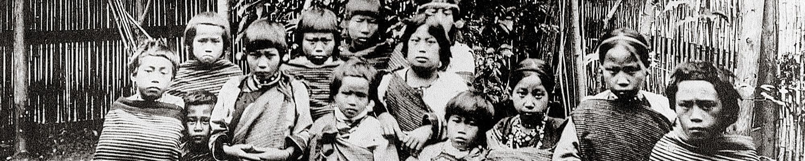
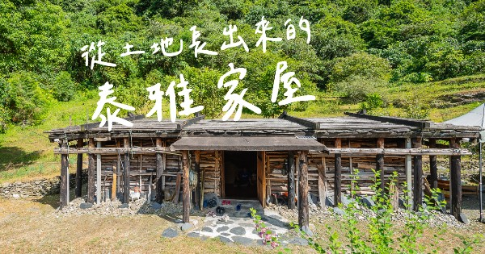

𓀪＊原民文化＊ 𓀪＊地理分布＊ ＊認識泰雅＊𓀪 ＊泰雅文化＊𓀪
原民文化 比大多數人都還早居住在這塊土地的原住民民族。目前官方所認定的台灣原住民族共有16個族,原民族群文化的多樣及豐富,值得我們去認識不同的文化底蘊。
一、地理分布：
分佈在台灣北部及中央山脈兩側，以及花蓮、宜蘭等山區。又分為泰雅亞族（Tayal）和賽德克亞族（Sedek）。
泰雅族又分為Sekoleq群和Tseole群。賽德克族又分為東賽德克群和西賽德克群。
泰雅族居住地域境內的高山相當多，例如棲蘭山、合歡山、大霸尖山、奇萊山等都是。河川則有新店溪、大甲溪、秀姑蘭溪等。
以山田燒墾和狩獵採集為生。分佈區有南投仁愛鄉、新竹尖石鄉、桃園復興鄉、花蓮縣萬榮鄉、宜蘭縣南澳鄉。總人口僅次於阿美族，為原住民族的第二大族。
二、認識泰雅族：
1.部落組織
2.祭祀團體
3.共負罪責團體
4.狩獵團體，這四個團體的成員有互重疊的特質，在不同部落，祭祀團體可能大於狩獵團體，其他的部落可能狩獵團體大於任何一個團體。
各地差異性頗大，無法一概而論。
一是gaga的觀念。另一是rutux的信仰理念。泰雅族是一個平權的社會，由領導能力強的人出任部落領袖，狩獵、出草也由英勇的族人擔任領袖。
但遇到部落有重大事情時，則由長老會議決策。
黥面對於泰雅男子而言，是成年的標誌也是勇武象徵。對於女子，則是善於織布的標記，一位泰雅女子，在十三、四歲的時候，就跟著YAYA學習織布的技巧，
也開始為自己準備出嫁時的衣裳，當少女的織藝精進，也就是准許在臉上刺青的時候了，這時也是尋覓如意郎君的好時機，一位不會織布和沒有黥面的女子在
部落裡是沒人追求的。而泰雅黥面文化在日治時代也漸漸被禁止，目前仍保有黥面的泰雅人都是年紀較長的族人。
早期泰雅族人的傳統住屋建築型分為半豎穴式（地分）及平地式二種。
第一種半豎穴：部份地區的泰雅人將地基向下挖三至五尺深，將泥土堆積在地基四周做成土壘，入口部份則留缺口當門。在外觀上屋簷幾乎與土壘相連，住屋
外觀非常低矮，屋內地基與屋頂距離卻有七、八尺甚至一丈餘高。
第二種平地式：部份地區的泰雅人將地基剷平，直接在上面建屋，外庭與內庭無高低之分。
三、認識泰雅文化：
-泰雅族服飾意義-
除了服飾上的圖騰象徵著祖靈的守護之外，泰雅族服的顏色其實也有其代表意義喔！泰雅族服飾以紅色為主要元素!
鮮豔活潑的視覺意象代表著泰雅族的熱情且積極向上的生命力，除此之外，在傳說中惡鬼最討厭紅色，因此身著紅色的衣服也可以協助族人們阻嚇惡鬼！
-泰雅服飾配置和裝飾-
泰雅族傳統服飾在身體各部位皆有不同的配件及搭配，像是泰雅族服飾男生部分，額帶、胸兜、上衣、披肩、前遮陰布及刀是基本配件；而泰雅族服飾女性
部分，則會穿戴額帶、胸兜、上衣、披肩、片裙和綁腿。除了基本服裝配置之外少不了配件裝飾！為了增添衣服華麗度，泰雅頭飾和腰帶會在盛裝時搭配各種
裝飾，過去通常會以貝珠、骨、竹等作為材料製作；現今則多以鈕扣、亮片、毛線等材料為服裝進行點綴。
-泰雅紋面-
紋面是泰雅族特有的傳統文化，也是泰雅族人的標誌，族人們也紋面的傳統文化而凝聚、產生認同，並在不同的臺灣原住民族的部落互動中，漸漸地讓紋面習俗
擴散，像是賽夏族、太魯閣族跟賽德克族也有紋面的文化。然而，因時代的更迭與社會變遷，泰雅族紋面文化逐漸凋零消失，所幸許多族人、學者及文化人士的
幫助下，協助復興紋面，能讓臺灣人見證令泰雅族人驕傲的紋面。
-泰雅族的男性、女性族人-
會接受不同的紋面，其象徵意義也大不相同，及不同的紋面意義：
𓀪＊泰雅族紋面男性圖騰＊𓀪
男生必須有參與獵首、出草行動，且成功獵下人頭後，才能獲得紋面的榮耀。男生通常會在前額中央、下巴各紋一塊黑色長方形紋面。如果獵首表現出色、獵下
很多人頭，可以在胸部、小腿等其他部位多紋一些特殊圖紋。
𓀪＊泰雅族紋面女性圖騰＊𓀪
泰雅族女性若要接受紋面，除了紋面前需已有初經、不可發生性行為，紡織水準亦需達到族人認可。泰雅族紋面女性圖騰，為在雙頰刺一長條貫穿嘴巴的黑色長
方形圖紋。和泰雅族男性一樣，如果泰雅族女性紡織能力出色，像是發現新布式、色彩、紋路等，也可以在其他部位多紋幾個圖騰。
藤編技藝是泰雅族傳統技藝文化的一環，泰雅族的男女分工明顯，在編織方面，藤編者多以男性為主，女性則以苧麻編織為主。藤蔞功能與揹負方式也有男女
之分別，男用藤蔞多以肩臂做揹負方式，女用藤蔞多以額頭做揹負方式，一個小型藤蔞就可以承載一百斤的載物重量，其堅固耐用具防水性。
在泰雅文化下常年累月地使用，揹負狩獵來的山肉，籐蔞沾上了鮮血與油脂就是最好的保養。
完整的藤編工藝流程，包含前置作業的野生「採藤」，是一項需要耗費體力，在傾斜的山坡地冒著被藤刺刺傷的種種艱困狀態才得以完成採集的工作，而後
採來的新鮮藤材必須經過處理才能成為可編織的素材，新鮮藤材處理的第一道程序是「粗剖」，也就是將藤均衡的縱切剖出直徑的四分之一，完成後須將藤材
放置三天至一星期，等它脫水後再進行「定寬」、「整厚」，如此繁複的「粗剖、定寬、整厚」三道程序處理過後的藤材才能夠用來進行編織，這樣不符成本
又耗費時間與體力的採藤與處理技術已逐漸失傳，取而代之的是直接購買國外藤材的省時省工方式。